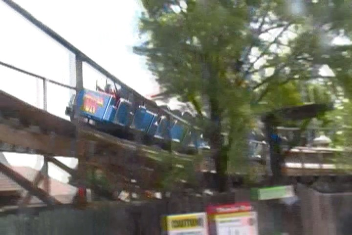
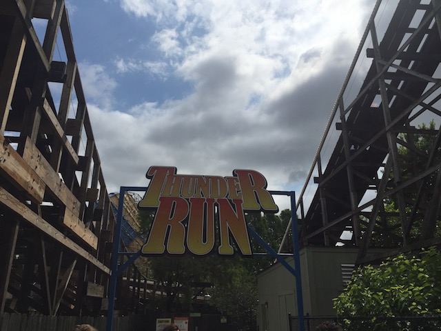

| |
Thunder Run Review

We're here at Kentucky Kingdom and todays ride we'll be reviewing is Thunder Run. The parks full sized wooden coaster, and one of the few rides that survived the parks Six Flags days and still resides at Kentucky Kingdom under new management. And Thunder Run is an...intersting ride. Now, not the ride itself. The ride itself is standard, average, and run of the mill. But the reputation that this ride has is very interesting. The ride is really highly rated and a lot of people really like this wooden coaster. Now, they don't call it one of the best rides ever. But they do seem to like it a lot, claiming that it had a lot of airtime and runs really well. And...eh. It's not bad. But...I honestly find it a little overrated. But at the same time, looking at the coaster, it most reminds me of Hurler. The layouts of these two are very similar. And this is much better than Hurler. So...eh. All right. Enough chit chat. Let's hop in the trains, pull down the lap bar, buckle the seatbelt, and away we go! We roll out the station, around a turn, and begin to climb the lifthill. You get a decent view of the park, which...Meh. We reach the top, head around a turn, and there's the ride. There's all that we're about to go through. We head down the first drop. Not an amazing first drop, but still fun. We gain some speed, and then head through a low to the ground turn. The good news is that there's some laterals here. The bad news is that there's some shuffling here. Still having fun though. We then head up a small hill, go around some weird half-curve, and into an airtime hill. It's mild airtime, but hey. I'll take what I can get. Rinse and repeat with another airtime hill. Wee! Mild airtime! And then we come around with another low to the ground turn. I'm just happy that these things have some laterals. That's pretty good. Even if it comes with shuffling. We then head into a turn in the other direction, go through some straight track, rise up a little bit, and then head into another turn. Yeah. This is a strange wooden coaster. But this turn is also downhill, so we get some laterals and gain a little bit of speed. Hmm. I'm starting to see why people like this ride. =) We then head over another bunny hop, get another pop of airtime, and go around another turn. Eh. It's shuffling. But hey. At least we got some laterals. But the turn gets weaker, and soon, it's just a standard kind of boring turn. We head up a hill, and glide through the brakes. HOLY SH*T!!! DOES THIS RIDE STOP!!! Eventually, it does. In the station. Yeah. The brakes on this thing are not strong. And that's Thunder Run. An...interesting wooden coaster. Yeah. I do find this ride to be overrated as I never understood the hype that this ride got. But at the same time, it's a fun coaster. Aside from a little bit of shuffling around the turns, I never found any issues with the ride. It's worth a ride if you're visiting Kentucky Kingdom. Who knows. Maybe you'll agree with everyone else and like the ride more than me.
6/10
Location: Kentucky Kingdom
Opened: 1990
Built by: Dinn Corporation
Last Ridden: June 27, 2018
Thunder Run Photos

Home
|